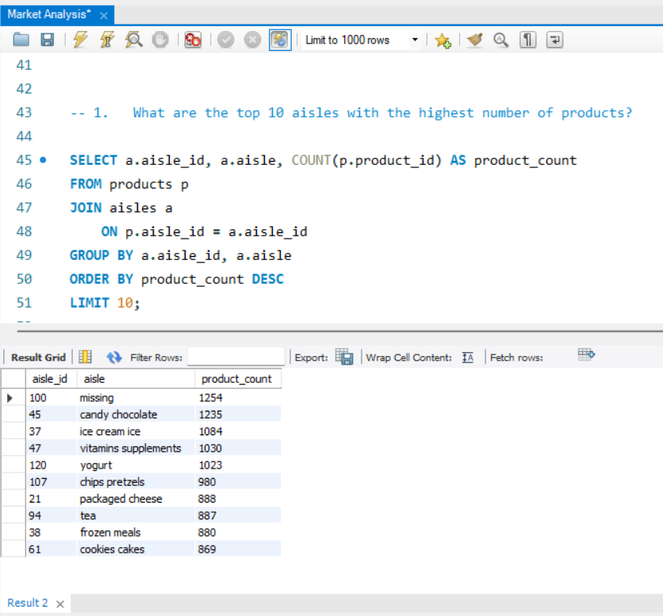
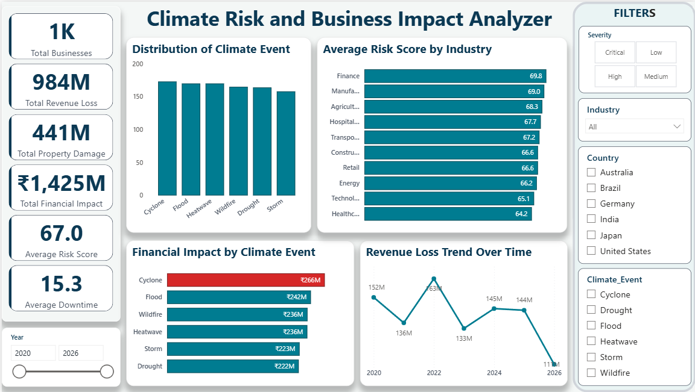
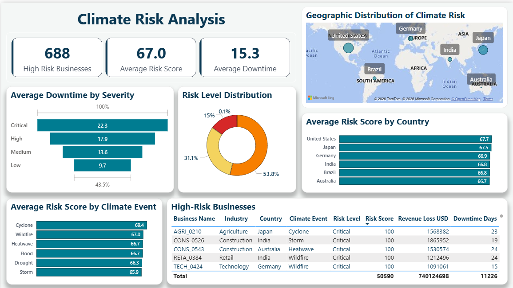
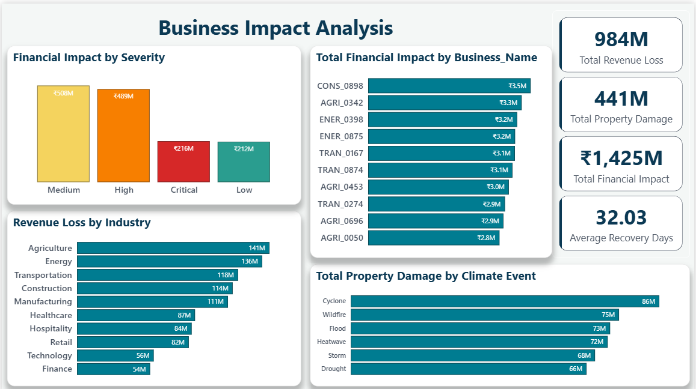
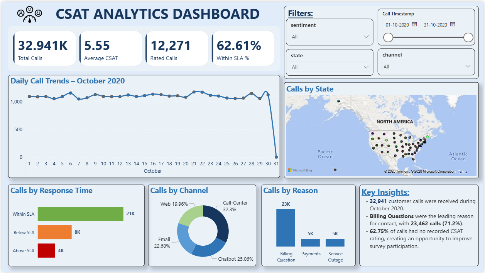
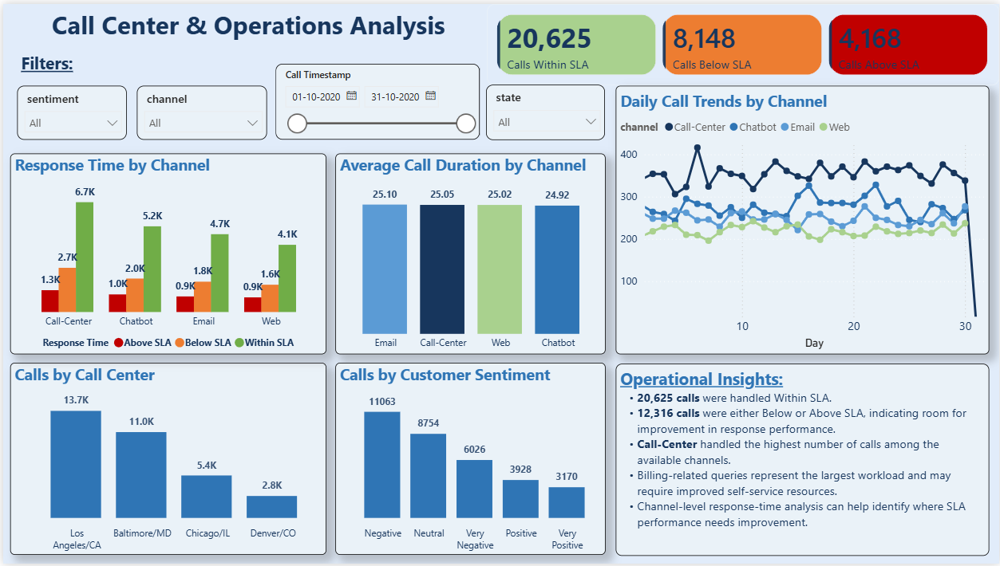
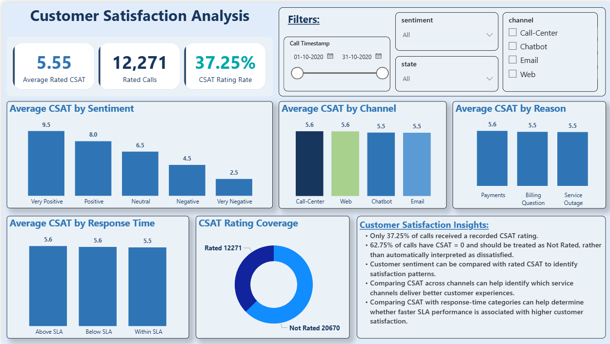
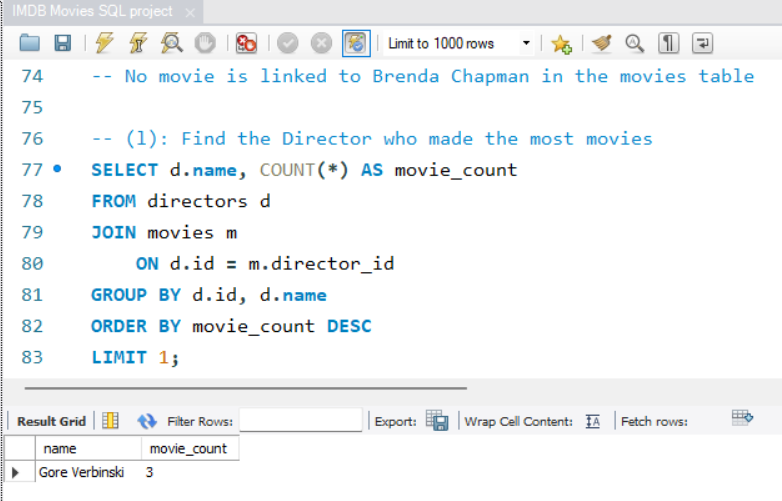
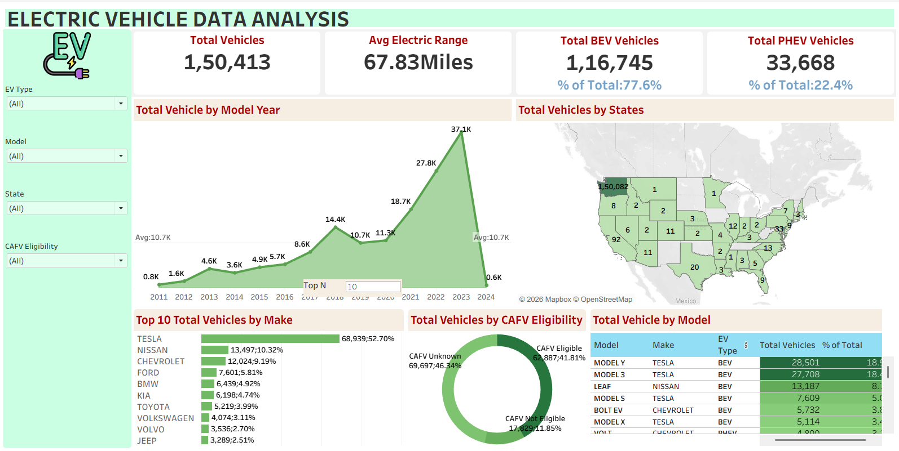

Hello, I'm
Turning data into meaningful insights that support better business decisions.
B.Tech graduate with hands-on experience in SQL, Python, Excel, Power BI, Tableau, and data analytics projects.
I am a B.Tech graduate aspiring to build my career as a Data Analyst. I have hands-on experience through my Data Analytics internship and projects, working with SQL, Python, Excel, Power BI, Tableau, and data visualization. I enjoy analyzing data, solving business problems, and transforming raw data into clear, actionable insights. I am eager to contribute my analytical skills while continuously learning and growing in a data-driven organization.
Data Cleaning, Data Processing, EDA, Trend Analysis, KPI Analysis, Business Insights
SQL, PostgreSQL, MySQL, Joins, CTEs, Subqueries, Window Functions, Aggregate Functions
Interactive Dashboards, DAX, Power Query, Data Modeling, KPI Visualization
Python Basics, Pandas, NumPy, Data Manipulation, Data Analysis
Data Cleaning, Formulas, Pivot Tables, Charts and Data Analysis
Dashboard Development, Data Visualization, Filters and Interactive Analysis
Descriptive Statistics, Correlation, Hypothesis Testing, IQR and Z-Score
Customer Analysis, Sales Analysis, Performance Analysis, Root Cause Analysis
Analytical Thinking, Problem Solving, Communication, Quick Learning, Team Collaboration
I follow a structured approach to transform raw data into meaningful business insights.
Understand the business problem and objective.
Define the key questions that need to be answered.
Identify relevant KPIs and metrics.
Gather the required data from available sources.
Handle missing values, duplicates and data quality issues.
Explore patterns, trends and relationships in the data.
Use SQL or Python to perform deeper analysis.
Create dashboards and visualizations to communicate findings.
Translate analytical findings into meaningful insights.
Provide actionable recommendations based on the analysis.
I continuously improve my technical and analytical skills through practical learning and real-world datasets.
Complex queries, CTEs, window functions and query optimization.
Pandas, NumPy and practical data analysis techniques.
Statistical analysis, hypothesis testing and data interpretation.
Advanced DAX, data modeling and interactive dashboards.
Understanding business problems and applying analytical thinking.
Communicating analytical findings clearly through visualizations.
I believe a good Data Analyst should first understand the business problem before working with the data. My approach is to ask the right questions, explore the data carefully, identify meaningful patterns, and communicate insights clearly to support better decisions.
DataMites
Worked on practical data analytics tasks involving data cleaning, exploratory analysis, visualization, and business insights using real-world datasets.
PORTFOLIO

Analyzed customer orders, products, aisles and departments using SQL to identify purchasing patterns and top-performing categories.



Built an interactive Power BI dashboard to analyze climate-related business risks, operational impact, downtime and financial losses.



Analyzed customer satisfaction data to understand CSAT ratings, sentiment, communication channels and customer experience patterns.

Analyzed movie ratings, genres, directors, revenue and other movie attributes using SQL to identify useful trends and patterns.

Created an interactive Tableau dashboard to explore electric vehicle data and identify trends across manufacturers, models and other vehicle attributes.
SQL-based analysis of customer purchasing behavior and product performance.
The objective of this project was to analyze customer orders, products, aisles and departments to identify purchasing patterns, popular products and high-performing categories.
Power BI dashboard analyzing climate-related business risks, operational impact, downtime and financial losses.
The objective of this project was to analyze climate-related risks and understand their impact on business operations, downtime and financial performance.
Power BI analysis of customer satisfaction, sentiment, communication channels and customer experience.
The objective of this project was to analyze customer satisfaction data and identify patterns in CSAT ratings, customer sentiment and communication channels.
SQL-based analysis of movie ratings, genres, directors, revenue and other movie attributes.
The objective of this project was to analyze movie data using SQL and identify trends related to ratings, genres, directors, revenue and movie performance.
Tableau dashboard analyzing electric vehicle data, manufacturers, models and vehicle characteristics.
The objective of this project was to analyze electric vehicle data and identify trends across manufacturers, models and different vehicle characteristics.
I am open to entry-level Data Analyst and Data Analytics opportunities. Feel free to connect with me for career opportunities, collaborations, or professional discussions.